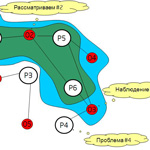
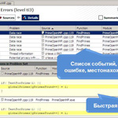
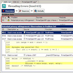
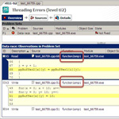
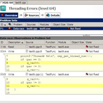
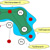

<HTML>
<HEAD>
<title>Intel Parallel Inspector – поиск ошибок многопоточности</title>
<meta http-equiv="Content-Type" content="text/html; charset=windows-1251" />
<meta name="robots" content="index, follow" />
<meta name="keywords" content="Компонент Intel Parallel Inspector, входящий в состав набора Intel Parallel Studio, может быть установлен и проинтегрирован в Microsoft Visual Studio и как часть набора, и отдельно. Инструмент помогает разработчикам обнаружить ошибки в многопоточной" />
<meta name="description" content="Компонент Intel Parallel Inspector, входящий в состав набора Intel Parallel Studio, может быть установлен и проинтегрирован в Microsoft Visual Studio и как часть набора, и отдельно. Инструмент помогает разработчикам обнаружить ошибки в многопоточной" />
<link href="../bitrix/js/main/core/css/core.css@1397654732.css" type="text/css" rel="stylesheet" />
<link href="../bitrix/templates/main/styles.css@1357814843.css" type="text/css" rel="stylesheet" />
<link href="../bitrix/templates/main/template_styles.css@1357814843.css" type="text/css" rel="stylesheet" />
<script type="text/javascript" src="../bitrix/js/main/core/core.js@1397654768"></script>
<script type="text/javascript">BX.message({'LANGUAGE_ID':'ru','FORMAT_DATE':'DD.MM.YYYY','FORMAT_DATETIME':'DD.MM.YYYY HH:MI:SS','COOKIE_PREFIX':'BITRIX_SM','USER_ID':'','SERVER_TIME':'1398074225','SERVER_TZ_OFFSET':'14400','USER_TZ_OFFSET':'0','bitrix_sessid':'b8a7a6a0086bde8dc8bdb2b592b7e6d2','SITE_ID':'ru','JS_CORE_LOADING':'Загрузка...','JS_CORE_WINDOW_CLOSE':'Закрыть','JS_CORE_WINDOW_EXPAND':'Развернуть','JS_CORE_WINDOW_NARROW':'Свернуть в окно','JS_CORE_WINDOW_SAVE':'Сохранить','JS_CORE_WINDOW_CANCEL':'Отменить','JS_CORE_H':'ч','JS_CORE_M':'м','JS_CORE_S':'с'})</script>
<script type="text/javascript" src="../bitrix/js/main/core/core_ajax.js@1397654452"></script>
<script type="text/javascript" src="../bitrix/js/main/session.js@1314803764"></script>
<script type="text/javascript">
bxSession.Expand(10800, 'b8a7a6a0086bde8dc8bdb2b592b7e6d2', false, '2688bad5c95a57f544635a13a7ff0826');
</script>
<META http-equiv="Refresh" CONTENT="3600">
<LINK REL='alternate' TITLE='BYTE/Россия: Новые статьи на сайте' HREF='../rss/index.php' TYPE='application/rss+xml'>
<link rel="stylesheet" href="../images/byte/css/main.css" type="text/css">
<link rel="stylesheet" href="../images/sk/css/menu.css" type="text/css">
<link rel="icon" href="../favicon.ico" type="image/x-icon">
<link rel="shortcut icon" href="../favicon.ico" type="image/x-icon">
<script language="JavaScript" src="../bitrix/templates/main/jquery.js"></script>
<script language="JavaScript" src="../bitrix/templates/main/main.js"></script>
<meta name='yandex-verification' content='4637394ebf6b856d' />
<meta name="google-site-verification" content="YuDDKJUKYlersC5RZAAO_epNdELhEXLrgxUxtn4_31Q" />
</HEAD>
<BODY>


<DIV id="container">

<center>
<table id="skmenu">
<tr>
<td class="cl"></td>
<!--<td class="bgr"><a href="http://www.skpress.ru" title="СК Пресс" target="_blank">СК Пресс:</a></td>-->
<td class="bgr"><a href="http://www.itrn.ru" title="Современные информационные технологии" target="_blank">ITRN:</a></td>
<td class="del"></td>
<td class="bglg"><a href="http://www.itbestsellers.ru" title="Бестселлеры IT-рынка">Бестселлеры IT-рынка</a></td>
<td class="del"></td>
<td class="bgdg">BYTE/Россия</td>
<td class="del"></td>
<td class="bglg"><a href="http://www.crn.ru" title="CRN/RE">CRN/RE</a></td>
<td class="del"></td>
<td class="bglg"><a href="http://www.iemag.ru" title="Intelligent Enterprise/RE">Intelligent Enterprise/RE</a></td>
<td class="del"></td>
<td class="bglg"><a href="http://www.pcmag.ru" title="PC Magazine/RE">PC Magazine/RE</a></td>
<td class="del"></td>
<td class="bglg"><a href="http://www.pcweek.ru" title="PC Week/RE">PC Week/RE</a></td>
<td class="cl"></td>
</tr>
</table>
</center>

<TABLE border="0" cellpadding="0" cellspacing="0" width="1000">
<TR>
<TD class='top-banner' colspan='3'>

<script language="JavaScript">
<!--
var banner_random = Math.round(Math.random() * 100000);
document.write('<iframe name="byte_top_adv" id="byte_top_adv" src="/ad/banners/top.php?banner_random='+banner_random+'" width="100%" height="90" frameborder="0" scrolling="no" vspace="0" hspace="0" marginwidth="0" marginheight="0"></iframe>');
// -->
</script>
<noscript>
<iframe name="byte_top_adv" id="byte_top_adv" src="../ad/banners/top.php.html" width="100%" height="90" frameborder="0" scrolling="no" vspace="0" hspace="0" marginwidth="0" marginheight="0"></iframe>
</noscript>
</TD>
</TR>
<TR>
<TD class='top-menu-g'><a href='index.php@TYPE_ID=6260.html'>Новости</a><a href='../numbers/index.html'>Архив</a><a href='../foto/index.html'>Фоторепортажи</a><a href='../video/index.html'>Видеоролики</a><a href='../events/index.html'>Мероприятия</a><a href='../forum/index.html'>Форумы</a><a href='../white-papers/index.html'>Решения</a><a href='../courses/index.html'>Учебные курсы</a><a href='../subscribe/index.html'>Подписка на рассылки</a><a href='../about/index.html'>Об издании</a></TD>
<TD valign='top' class='top-menu-d'></TD>
<TD class='top-menu-r'><a href='../auth/index.html'>Авторизация</a></TD>
</TR>
</TABLE>
<!-- для баннера топгир
<map name="map1"> <area href="/articles/index.php?TYPE_ID=6254" alt="Сети и телекоммуникации" shape="rect" coords="0,0,177,18"></area> <area href="http://netgear.ru/?page=products" alt="netgear" shape="rect" coords="0,18,177,36"></area> </map>-->

<TABLE border="0" cellpadding="0" cellspacing="0" width="1000">
<TR>
<TD><a href='../index.html' title='На главную'><!----></a></TD>
<TD valign='top' width="90%">

	<table border="0" cellpadding="0" cellspacing="0" width="100%">
	<tr>
	<td class='rubric-c-l'></td>
	<td class='rubric' nowrap><a href='index.php@TYPE_ID=6250.html'>Технопарк</a></td>
	<td class='rubric-c-r'></td>
	<td class='rubric-c-l'></td>
	<td class='rubric' nowrap><a href='index.php@TYPE_ID=6251.html'>Клуб экспертов</a></td>
	<td class='rubric-c-r'></td>
	<td class='rubric-c-l'></td>
	<td class='rubric' nowrap><a href='index.php@TYPE_ID=6252.html'>Платформы и технологии</a></td>
	<td class='rubric-c-r'></td>
	<td class='rubric-c-l'></td>
	<td class='rubric' nowrap><a href='index.php@TYPE_ID=6253.html'>Проекты</a></td>
	<td class='rubric-c-r'></td>
	<td class='rubric-c-l'></td>
	<td class='rubric' nowrap><!----><a href='index.php@TYPE_ID=6254.html'>Сети и телекоммуникации</a></td>
	<td class='rubric-c-r'></td>
	<td class='rubric-c-l'></td>
	<td class='rubric' nowrap><a href='index.php@TYPE_ID=16029.html'>Обзоры</a></td>
	<td class='rubric-c-r'></td>
	<td class='rubric-c-l'></td>
	<td class='rubric' nowrap><a href='index.php@TYPE_ID=6256.html'>Средства разработки</a></td>
	<td class='rubric-c-r'></td>
	</tr>
	</table>
	<table border="0" cellpadding="0" cellspacing="0" width="100%">
	<tr>
	<td class='rubric-c-l'></td>
	<td class='rubric' nowrap><a href='index.php@TYPE_ID=6257.html'>Программное обеспечение</a></td>
	<td class='rubric-c-r'></td>
	<td class='rubric-c-l'></td>
	<td class='rubric' nowrap><a href='index.php@TYPE_ID=6258.html'>Безопасность</a></td>
	<td class='rubric-c-r'></td>
	<td class='rubric-c-l'></td>
	<td class='rubric' nowrap><a href='index.php@TYPE_ID=6255.html'>ByteLab</a></td>
	<td class='rubric-c-r'></td>

	<!--<td class='rubric-c-l'></td>
	<td class='rubric' nowrap><a href='/articles/index.php?TYPE_ID=6259'>Колонка редактора</a></td>-->
	<td class='rubric-c-r-r'></td>
	<td class='rubric-r' nowrap><!--<a href='/blog/'>--><a>Блоги</a><!--</a>--></td>
	<td></td>
	<td class='search-block'></td>
	<td class='search-block' width='40%'><FORM action="http://www.bytemag.ru/search/index.php" method="GET" name="FormSearch"><input type="hidden" name="how" value="d"><input id="queryText" name="q" size='20' style='width: 100%;'></td>
	<td class='search-block'><input type='image' src='../images/byte/btn-search.gif'></FORM></td>
	<td class='rss-block'><a href='../rss/index.php'></a></td>
	<td class='rss-block'><a href='../rss/index.php'>RSS</a></td>
	<td></td>
	<td class='rubric-r'><a href='../themes/index.html'>Темы</a></td>
	<td class='rubric-c-r-r'></td>
	</tr>
	</table>

</TD>
</TR>
<TR>
<TD colspan='2' class='bg-sub-rubric'></TD>
</TR>
</TABLE>


<TABLE border="0" cellpadding="0" cellspacing="0" class='main-tbl'>
<TR valign='top'>
<TD width='5'></TD>
<TD width='250'>

<DIV class='adv'>
<script language="JavaScript">
<!--
var banner_random = Math.round(Math.random() * 100000);
document.write('<iframe name="byte_left_adv" id="byte_left_adv" src="/ad/banners/left.php?banner_random='+banner_random+'" width="250" height="100%" frameborder="0" scrolling="no" vspace="0" hspace="0" marginwidth="0" marginheight="0" style="max-height:400px;"></iframe>');
// -->
</script>
 <noscript> <iframe width="250" scrolling="no" height="100%" frameborder="0" marginheight="0" marginwidth="0"  style="max-height:400px;" hspace="0" vspace="0" src="../ad/banners/left.php.html" id="byte_left_adv" name="byte_left_adv"></iframe> </noscript> </DIV>

<table border='0' cellpadding='0' cellspacing='0' width='100%'><tr><td width='5%' valign='top'><a href='index.php@TYPE_ID=6260.html'></a></td><td width='95%' class='bg-title'><a href='index.php@TYPE_ID=6260.html'>Новости</a></td></tr></table><DIV class='block-g'><b><a href='detail.php@ID=25289.html'>Облачные решения Schneider Electric и Microsoft: управление энергоэффективностью и экологичностью</a></b><br />Как объявила компания Schneider Electric, в рамках ее альянса с Microsoft теперь появилась возможность разрабатывать облачные решения для управления &hellip;<br /><br /><b><a href='detail.php@ID=25288.html'>Устройства Lenovo c защитой «АльтЭль»</a></b><br />Компании &laquo;АльтЭль&raquo;, российский разработчик средств защиты информации, и Lenovo объявили о завершении работ по интеграции модуля доверенной загрузки &hellip;<br /><br /><b><a href='detail.php@ID=25286.html'>Год на российском рынке ИБП оказался очень сложным</a></b><br />По данным аналитической компании ITResearch в 2013 г. в России было продано 1,95 млн ИБП на сумму 503,6 млн долл. Годовая динамика составила &ndash;17% в &hellip;<br /><br /><b><a href='detail.php@ID=25285.html'>МФУ Brother Ink Benefit с картриджами повышенной емкости</a></b><br />Компания Brother выпустила новую линейку струйных многофункциональных устройств Ink Benefit, обеспечивающих низкую стоимость печати за счет &hellip;<br /><br /><b><a href='detail.php@ID=25284.html'>Высокоскоростной интерфейс в графических процессорах NVIDIA</a></b><br />Компания NVIDIA объявила о намерении интегрировать высокоскоростной интерфейс NVLink в будущие графические процессоры, что должно ускорить передачу &hellip;<br /><br /><a href='index.php@TYPE_ID=6260.html' class='link'>Другие новости</a></DIV>
<DIV class='adv'>
<script language="JavaScript">
<!--
var banner_random = Math.round(Math.random() * 100000);
document.write('<iframe name="byte_left2_adv" id="byte_left2_adv" src="/ad/banners/left2.php?banner_random='+banner_random+'" width="250" height="100%" frameborder="0" scrolling="no" vspace="0" hspace="0" marginwidth="0" marginheight="0" style="max-height:120px;"></iframe>');
// -->
</script>
<noscript>
<iframe name="byte_left2_adv" id="byte_left2_adv" src="../ad/banners/left2.php.html" width="250" height="100%" frameborder="0" scrolling="no" vspace="0" hspace="0" marginwidth="0" marginheight="0" style="max-height:120px;"></iframe>
</noscript></DIV>

<table border='0' cellpadding='0' cellspacing='0' width='100%'><tr><td width='5%' valign='top'><a href='index.php@OPINION=1.html'></a></td><td width='95%' class='bg-title'><a href='index.php@OPINION=1.html'>Мнения</a></td></tr></table><DIV class='block-g'><a href='detail.php@ID=25262.html'></a><b><a href='detail.php@ID=25262.html'>В сегменте панелей для видеостен конкурентная борьба идет в технологической сфере</a></b><br />На рынке информационных панелей, если судить по отчетам аналитиков, растет потенциал и улучшаются перспективы сегмента дисплеев для видеостен. Этот &hellip;<br /><br /><a href='detail.php@ID=24189.html'></a><b><a href='detail.php@ID=24189.html'>У рынка планшетов есть много драйверов дальнейшего роста </a></b><br />В последнее время рынок планшетов бурно развивается. К традиционным планшетам добавились гибридные гаджеты, устройства &laquo;2 в 1&raquo; и масса других &hellip;<br /><br /><a href='detail.php@ID=23635.html'></a><b><a href='detail.php@ID=23635.html'>Основным драйвером ускоренного роста рынка тяжелых ИБП в последние годы являются ЦОДы </a></b><br />Любая компания рано или поздно сталкивается с необходимостью обработки данных. Вначале для этого достаточно сервера, затем число серверов и их &hellip;<br /><br /><a href='index.php@OPINION=1.html' class='link'>Другие мнения</a></DIV>
<table border='0' cellpadding='0' cellspacing='0' width='100%'><tr><td width='5%' valign='top'><a href='index.html'></a></td><td width='95%' class='bg-title'><a href='index.html'>Наиболее читаемые</a></td></tr></table><DIV class='block-g'><ul class='list-links'><li><a href='detail.php@ID=25074.html'>Комплекты LifeSize – все для видеоконференцсвязи</a></li><li><a href='detail.php@ID=25041.html'>Видеоконференцсвязь от TrueConf – приложение WebRTC</a></li><li><a href='detail.php@ID=25196.html'>Видеоконференции в среде ALT Linux </a></li><li><a href='detail.php@ID=25115.html'>Облачный и традиционный настольный антивирус: что выбрать?</a></li><li><a href='../bitrix/rk.php@id=375&amp;event1=banner&amp;event2=click&amp;event3=1+%252F+[375]+[TXT2]+Коммутаторы+начального+уровня+апрель+2014&amp;goto=http%253A%252F%252Fwww.bytemag.ru%252Farticles%252Fdetail.php%253FID=25176.html'>Коммутаторы начального уровня</a></li><li><a href='detail.php@ID=25114.html'>Microsoft Lync 2013 по модели SaaS </a></li><li><a href='detail.php@ID=25103.html'>Серверы IBM Power Systems – в облаке для разработчиков </a></li><li><a href='detail.php@ID=25178.html'>Коммутаторы ZyXEL начального уровня</a></li><li><a href='detail.php@ID=25177.html'>От 5 до 16 – Ethernet-коммутаторы для SOHO и малого бизнеса</a></li><li><a href='detail.php@ID=25208.html'>«Большие данные» и новая версия Intel Xeon E7</a></li></ul></DIV>

<table border='0' cellpadding='0' cellspacing='0' width='100%'><tr><td width='5%' valign='top'><a href='../white-papers/index.html'></a></td><td width='95%' class='bg-title'><a href='../white-papers/index.html'>Современные решения</a></td></tr></table><DIV class='block-g'><div class='list-el'><a href='../white-papers/index.php@COMPANY_ID=12543.html'></a><b><a href='../white-papers/detail.php@ID=12544.html'>Новые стратегии резервного копирования</a></b></div><div class='list-el'><a href='../white-papers/index.php@COMPANY_ID=19413.html'></a><b><a href='../white-papers/detail.php@ID=19667.html'>По дороге к ECM. Вопросы и ответы</a></b></div><div class='list-el'><a href='../white-papers/index.php@COMPANY_ID=13245.html'></a><b><a href='../white-papers/detail.php@ID=13246.html'>ABBYY FineReader Engine 9.0 – передовые технологии распознавания документов для разработчиков программ</a></b></div><div class='list-el'><a href='../white-papers/index.php@COMPANY_ID=12719.html'></a><b><a href='../white-papers/detail.php@ID=12720.html'>DatabaseGear – инструменты Embarcadero для специалистов по базам данных</a></b></div><div class='list-el'><a href='../white-papers/index.php@COMPANY_ID=12721.html'></a><b><a href='../white-papers/detail.php@ID=12722.html'>Система управления ИТ-инфраструктурой предприятия — «ИнфраМенеджер»</a></b></div><a href='../white-papers/index.html' class='link'>Другие решения</a></DIV>
<table border='0' cellpadding='0' cellspacing='0' width='100%'><tr><td width='5%' valign='top'><a href='../courses/index.html'></a></td><td width='95%' class='bg-title'><a href='../courses/index.html'>Учебные курсы</a></td></tr></table><DIV class='block-g'><div class='list-el'><a href='../courses/index.php@COMPANY_ID=18527.html'></a><b><a href='../courses/detail.php@ID=19120.html'>Обратно за парту с Adaptec by PMC</a></b></div><div class='list-el'><a href='../courses/index.php@COMPANY_ID=18527.html'></a><b><a href='../courses/detail.php@ID=18993.html'>Adaptec Certified Storage Professional</a></b></div><a href='../courses/index.html' class='link'>Другие курсы</a></DIV>

<table border='0' cellpadding='0' cellspacing='0' width='100%'><tr><td width='5%' valign='top'><a href='../subscribe/index.html'></a></td><td width='95%' class='bg-title'><a href='../subscribe/index.html'>Подписка на рассылки</a></td></tr></table><table cellpadding='0' cellspacing='0' border='0' class='block-g'><tr><td><form action='http://www.bytemag.ru/subscribe/subscr_edit.php'><table border='0' width='100%'><tr><td valign='top' align='right'><input type='checkbox' name='sf_RUB_ID[]' id='sf_RUB_ID_1' value='3' checked></td><td><b><label for='sf_RUB_ID_1'>BYTE Express</label></b><br />Анонсы новых статей, последние новости и т.п.</td></tr><tr><td width='15%' nowrap><b>E-mail</b></td><td width='85%'><input type='text' name='sf_EMAIL' size='15' value='' class='100p'></td></tr></table><DIV class='btn-grey'><input type='submit' value='Подписаться' class='200px'></DIV><a href='../subscribe/index.html' class='link'>Управление подпиской</a></form></td></tr></table>
</TD>
<TD width='10'></TD>
<TD width='560'>

<p>
<script language="JavaScript">
<!--
var banner_random = Math.round(Math.random() * 100000);
document.write('<iframe name="byte_center_adv" id="byte_center_adv" src="/ad/banners/center.php?banner_random='+banner_random+'" width="100%" height="90" frameborder="0" scrolling="no" vspace="0" hspace="0" marginwidth="0" marginheight="0"></iframe>');
// -->
</script>
<noscript>
<iframe name="byte_center_adv" id="byte_center_adv" src="../ad/banners/center.php.html" width="100%" height="90" frameborder="0" scrolling="no" vspace="0" hspace="0" marginwidth="0" marginheight="0"></iframe>
</noscript>
</p>
<form name='PrintForm15724' method='post' action='http://www.bytemag.ru/articles/detail_print.php?ID=15724&amp;PRINT=Y' target='_blank'><input type='hidden' name='ACTION' value='PRINT'><input type='hidden' name='SHOW_IMAGE' value='N'></form><br /><TABLE class='tbl-link-services'><TR><TD width='16'></TD><TD><a href='javascript: document.forms["PrintForm15724"].SHOW_IMAGE.value="N"; document.forms["PrintForm15724"].submit();'>Версия для печати</a> (<a href='javascript: document.forms["PrintForm15724"].SHOW_IMAGE.value="Y"; document.forms["PrintForm15724"].submit();'>включая изображения</a>)</TD><TD width='16'></TD><TD><a href='javascript:SendLink(15724);'>Отправить ссылку</a></TD><TD width='16'></TD><TD><a href='detail.php@ID=15724.html#add-blog'>Поместить в блог</a></TD><TD width='16'></TD><TD><a href='detail.php@ID=15724.html#add-comment'>Добавить комментарий</a></TD><TD width='16'></TD><TD><a href='javascript:SendAuthor(15724);'>Написать автору</a></TD><TD width='16'></TD><TD><a href='../subscribe/index.html'>Подписаться на рассылки</a></TD></TR></TABLE><br /><p><b>Раздел:</b> <a href='index.php@TYPE_ID=6256.html'>Средства разработки</a><br /><b>Тема:</b> <a href='index.php@THEME_ID=6276.html'>Разработка приложений</a><br /></p><h1>Intel Parallel Inspector – поиск ошибок многопоточности</h1>Автор: Владимир Цымбал, инженер, технический консультант подразделения SSG, Intel<br />21.10.2009<p></p><TABLE class='tbl-tn-list'><TR align='center'><TD><a href='../big-pictures/index.php@ARTICLE_ID=15724&amp;PICTURE_ID=15730.html'></a></TD></TR>
<TR><TD><b>Рис. 1. Граф, отражающий взаимоотношение категорий представления.</b></TD></TR><TR align='center'><TD><a href='../big-pictures/index.php@ARTICLE_ID=15724&amp;PICTURE_ID=15731.html'></a></TD></TR>
<TR><TD><b>Рис. 2. Список событий и ссылки на исходный код приложения.</b></TD></TR><TR align='center'><TD><a href='../big-pictures/index.php@ARTICLE_ID=15724&amp;PICTURE_ID=15732.html'></a></TD></TR>
<TR><TD><b>Рис. 3. Пример диагностики Potential Privacy Infringement. </b></TD></TR><TR align='center'><TD><a href='../big-pictures/index.php@ARTICLE_ID=15724&amp;PICTURE_ID=15733.html'></a></TD></TR>
<TR><TD><b>Рис. 4. Ошибка Data Race для двух функций.</b></TD></TR><TR align='center'><TD><a href='../big-pictures/index.php@ARTICLE_ID=15724&amp;PICTURE_ID=15734.html'></a></TD></TR>
<TR><TD><b>Рис. 5. Обнаружена ошибка при анализе на уровне ti4.</b></TD></TR></TABLE><DIV class='article-text'><p>Компонент Intel Parallel Inspector, входящий в состав набора Intel Parallel Studio, может быть установлен и проинтегрирован в Microsoft Visual Studio и как часть набора, и отдельно. Инструмент помогает разработчикам обнаружить ошибки в многопоточной программе на этапе ее написания и верификации, улучшая корректность и стабильность исполнения ПО. Специфичный функционал инструмента и возможность работы с ним из командной строки подразумевают применение в процессе автоматизированного тестирования. Но благодаря удобному графическому интерфейсу Inspector используется разработчиками и в повседневной практике при проверке тех или иных участков проекта. Кроме того, анализ готовых проектов на наличие ошибок многопоточности часто открывает глаза на другие имеющиеся в коде проблемы, что заставляет задуматься о подходах к разработке многопоточных программ. </p>

<p>В данной статье мы рассмотрим особенности использования Inspector для поиска ошибок, специфичных для многопоточных программ. Инструмент позволяет находить и ошибки доступа к памяти, но эта тема рассмотрена в отдельной статье. </p>

<h2>Как обнаруживаются ошибки многопоточности</h2>
 
<p>Как и другие инструменты, анализирующие корректность исполнения программы, Inspector не проводит разбор и анализ синтаксиса исходного кода, а работает с объектами бинарного кода, исполняемыми в системе. Поэтому для анализа исполняемого кода &laquo;на лету&raquo; Inspector использует специальные методы внедрения в процесс и перехвата вызовов системных и потоковых API. Данные собираются динамически, и анализируются только те участки кода, которые исполнялись при работе программы. Именно поэтому при тестировании рекомендуется запускать такие сценарии, которые охватывали бы тестируемый код как можно более полно (свойство полноты теста). Ввиду того что инструмент не имеет априорной информации о количестве создаваемых потоков, их параметрах, времени жизни, разделяемых данных, методах работы с данными, функциях синхронизации и так далее, он выстраивает собственную динамическую модель исполнения приложения, основными элементами которой являются события, например, системные вызовы и доступ к разделяемым между потоками данным. </p>

<p>Для внедрения в процесс исследуемого приложения, перехвата системных вызовов и анализа всех инструкций чтения/записи памяти и их адресов на уровне бинарного кода в Inspector применяется модификация приложения с помощью динамической бинарной инструментации. В основе инструментатора лежит утилита <a target="_blank" href=" http://www.pintool.org">Pin &ndash; Dynamic Binary Instrumentation Tool</a>, которая внедряется в анализируемый процесс непосредственно перед стартом, позволяя отслеживать выполнение практически любых инструкций и предоставляя API доступа к содержимому регистров, контексту выполнения программы, символьной и отладочной информации. </p>

<p>Для составления адекватной модели инструмент должен отслеживать все вызовы потоковых API и функции выделения/освобождения памяти динамически. В Windows таких API-функций более 170. Причем, возможно, не все функции поддерживаются инструментом, поскольку за основу взяты только те, которые опубликованы и описаны разработчиком ОС. В связи с этим существует вероятность возникновения ошибок типа False Positive и False Negative (ложное обнаружение ошибок либо ошибочное необнаружение проблем). Иногда таких ошибок бывает достаточно много. </p>

<p>Ввиду того, что ошибки многопоточности &ndash; это по существу неудачно расположенные во времени события, происходящие в одновременно работающих потоках, строящаяся и анализирующаяся модель исполнения многопоточной программы тоже имеет протяженность &laquo;во времени&raquo;. Однако для отсчета по временной шкале пользуются не секундами, а событиями, изменяющими состояние модели. Это позволяет обнаруживать не только ошибки, произошедшие во время тестирования, но и те, которые не произошли, но могли бы произойти при каких-либо других временных параметрах системы. Например, создание потока может быть первым отсчетом во временной шкале. Такими отсчетами являются все вызовы функций синхронизации, равно как и доступ к разделяемым переменным. А в промежутках между ними находятся участки (frames), в течение которых состояние считается неизменным, а доступ к данным &ndash; либо безопасным, либо нет, в зависимости от значений предыдущих отсчетов. </p>

<p>В качестве примера приведем ситуацию с доступом к глобальной переменной из двух потоков. На шкале уже есть отсчеты, соответствующие созданию обоих потоков, и один отсчет модификации переменной в потоке T1. Если в следующем &laquo;фрейме&raquo; зарегистрирован доступ к переменной из потока T2, то он будет признан опасным и будет сформировано сообщение об ошибке. При этом совершенно неважно, насколько близко или далеко друг от друга в реальном времени произошли эти события. Если же доступ к переменной в потоках T1 и T2 разделяет отсчет определенного типа, например, вызов функции синхронизации в T1 или функции уничтожения потока T1, то следующий фрейм будет признан безопасным для операции с переменной (как и остальные) до тех пор, пока не будут зарегистрированы события, способные повлиять на возможность ошибочной модификации глобальной переменной. </p>

<p>В ходе исполнения приложения Inspector накапливает сообщения об ошибках и информацию о событиях, которые будут представлены пользователю. Некоторые из этих событий можно просмотреть в реальном времени еще до завершения работы программы. </p>

<p>В Intel Parallel Inspector используется оригинальный подход к представлению структуры обнаруженных ошибок и анализируемых проблем в коде. Существуют три категории представления. </p>

<p><b>Observation</b> (замер или наблюдение). Некоторое изменение состояния, зафиксированное для определенного участка кода, например, создание объекта синхронизации, доступ к объекту в памяти, захват блокировки и т.д. </p>

<p><b>Problem</b> (проблема). Несколько логически объединенных наблюдений, которые обусловили проблему, например, чтение непроинициализированной памяти, внеочередной захват блокировки, незащищенный доступ к разделяемым данным. </p>

<p><b>Problem Set</b> (совокупность проблем). Набор проблем, в которых участвует одно или несколько общих наблюдений: это может быть группа событий несинхронизированного чтения/записи незащищенных данных или потенциальная блокировка в цикле. </p>

<p>Взаимоотношение между этими категориями удобно рассмотреть на примере графа (рис. 1). Белые узлы графа соответствуют Проблемам. Их можно рассматривать как уникальные случаи ошибок в программе. Красные узлы &ndash; это Наблюдения. Каждая из Проблем связана с несколькими Наблюдениями локальной связью, отражаемой линией на графе. Иногда одно Наблюдение участвует в двух Проблемах. Например, если проблема &laquo;гонок&raquo; (data races) в параллельном коде возникла из за несихронизированного доступа по записи глобальной переменной, то наверняка существует еще несколько проблем, связанных с несинхронизированным доступом к этой переменной. </p>

<p>Глобальный граф взаимоотношений можно рассматривать в различных ракурсах. Давайте проанализируем Наблюдение O2. O2 участвует в трех различных Проблемах: P2 {O1,O2,O9}, P5{O2,O3,O4} и P6{O2,O3}. Мы экстраполируем взаимосвязь на все эти Наблюдения, потому что если все три проблемы решаются в случае изменения Наблюдения O2, то его модификация окажет влияние и на остальные Наблюдения. </p>

<p>В графе могут быть Проблемы, которые стоят особняком (P3) и никак не связаны с общими для других Проблем Наблюдениями. </p>

<p>Еще один тип взаимоотношений &ndash; опосредованные отношения между Проблемами P1 и P4, которые, возможно, имеют различные пути разрешения. Хотя, если представить себе, что O3 и O9 &ndash; это аллокация объектов, добавление необходимых элементов сихронизации для данных объектов могло бы разорвать эту сложную связь. </p>

<p>В любом случае пользователю не нужно анализировать глобальный граф взаимоотношений, так как результаты представлены пользовательским интерфейсом в более удобной для восприятия табличной форме. Тем не менее, если проанализировать любую из найденных проблем в списке, всегда можно восстановить такой граф. </p>

<h2>Интерфейс</h2>
 
<p>Еще до запуска приложения пользователь должен выбрать уровень анализа, который определяет детализацию получаемой информации и накладные расходы на исследование. Последние обусловлены использованием технологии динамического бинарного инструментирования. Приложение будет исполняться дольше, чем если бы оно было запущено вне анализа. В обычной практике для пользователей время анализа не критично, так как анализ проводится один раз в текущей сборке проекта (а если тестирование автоматизированное, то длительный тест можно оставить на ночной период). Однако возможность управления глубиной анализа тоже необходима, и пользователю предоставляется четыре уровня анализа, в зависимости от его глубины. </p>

<ul>
  <li>Уровень ti1 &ndash; позволяет обнаруживать взаимные блокировки потоков. Глубина стека функций равна единице. Это самый &laquo;легкий&raquo; тип анализа, позволяющий быстро проверить программу, которая почему-то иногда &laquo;виснет&raquo;; чтобы понять, являются ли ошибки многопоточности причиной проблем. </li>

  <li>Уровень ti2 &ndash; дополнительно к первому уровню позволяет обнаружить конкуренцию доступа к незащищенным данным, &laquo;гонки&raquo;. Это основной уровень, на котором относительно быстро обнаруживается большинство ошибок многопоточности. Глубина стэка выбрана минимальной, так как на этом уровне просто обнаруживается, что ошибки есть, и не требуется вникать, где они располагаются. При этом накладные расходы относительно невысоки. Уровень оптимален для быстрого автоматизированного тестирования. </li>

  <li>Уровень ti3 &ndash; отличается от предыдущего тем, что глубина стека увеличена до 12. Уровень используется для исследования конкретных проблем многопоточности, включая анализ потока исполнения программы, приведшего к ошибке. </li>

  <li>Уровень ti4 &ndash; высший уровень, позволяющий определять все типы ошибок многопоточности, которые способен обнаружить инструмент. Главная его особенность &ndash; анализируется многопоточный доступ к стековой памяти. Уровень вложенности функций &ndash; 32. Как и все остальные уровни, 4-й является инклюзивным, т. е. включает в себя все виды анализа на предыдущих уровнях. Соответственно накладные расходы будут максимальными. Анализ реального большого приложения может занять значительное время, поэтому рекомендуется проводить его либо в автоматизированном режиме на тестовых системах, либо оставлять работающий с приложением инструмент на выходные в конце недели.</li>
</ul>
 
<p>Глубина стека на каждом уровне выбрана эмпирически и является компромиссом между полнотой предоставляемой информации и величиной накладных расходов на анализ приложения. В данной версии продукта пользователь не может менять глубину стека. </p>

<p>Выбрав соответствующий тип анализа в инструментальной панели Parallel Inspector, пользователь нажимает кнопку Inspect и выбирает уровень анализа. Инструментатор внедрится в процесс анализируемого приложения, заменив оригинальный код, и инициализирует запуск кода программы. Как и в случае с Memory Checker, вместе с загрузкой дополнительных библиотек процесс запуска приложения занимает определенное время, поэтому пользователь заметит задержку. Чем больше динамических библиотек в программе, тем больше эта задержка. Далее приложение исполняется как обычно, только медленнее &ndash; в зависимости от глубины анализа и, конечно, от относительного количества специфичных вызовов функций Memory и Threading API во время исполнения. </p>

<p>После окончания исполнения приложения Inspector выведет список ошибок и диагностических сообщений о событиях, связанных с существованием потоков в процессе выполнения. Каждому сообщению Inspector сопоставит строку исходного кода, в которой обнаружена причина того или иного события или ошибки, а также стек вызовов функций и адрес памяти. </p>

<p>В соответствии с упомянутым выше графом результаты анализа структурированы таким образом, чтобы вначале получить обзор списка проблем (Problem Sets), представляющих собой конечный результат действия нескольких событий, приведших к проблеме (Observations). Например, проблема &laquo;гонки&raquo;, или data race &ndash; это следствие доступа из двух потоков к общим данным по &laquo;чтению и записи&raquo;, или по &laquo;записи и записи&raquo;. Такие детали в виде зарегистрированных событий можно посмотреть в окне, нажав кнопку Details в главном окне. Там же можно взглянуть на код, в котором это событие произошло (pис. 2). Это удобно, когда нет необходимости переключаться в редактор исходного кода, а нужно просто пройтись по ошибкам в списке и просмотреть, на какие строки кода ссылается диагностика. </p>

<p>В списке с найденными ошибками доступна вся информация о процессе, модуле, функции и номере строки кода, в которой эта ошибка произошла. В реальных проектах список ошибок бывает значительным. В этом случае удобно воспользоваться фильтром по типу ошибки, ее описанию, имени исходника, имени функции или модуля. В процессе исправления ошибок можно помечать их как исправленные или отфильтровывать, чтобы они не загромождали список. </p>

<p>Из списка проблем или детального списка можно перейти в режим Sources. Так как потоковые ошибки сопряжены с выполнением программы несколькими потоками одновременно (а иногда доступ к незащищенным данным может происходить из разных функций), для удобства представления и обнаружения причин ошибки Inspector отображает сразу два окна исходного кода с функциями, выполнявшимися разными потоками. В них будет отображена взаимосвязь между событиями, например, такими, как доступ по чтению и записи к данным, которые привели к &laquo;гонкам&raquo;. Нарушение корректности реализации многопоточной логики демонстрируется как с помощью исходного кода, так и в окне Observations Relationships, где графически выстраивается связь между событиями, в данном случае равноправными. При этом события помечаются разными цветами, чтобы легко было определить соответствующие окна исходного кода, описания событий и стеки вызовов функций. Стеки вызовов нужны для того, чтобы было легче определить, каким образом мы попали в ту или иную функцию. Дело в том, что событие, приведшее к ошибке, далеко не всегда происходит в самом исследуемом приложении: например, оно может быть вызвано в сторонней библиотеке. Найдя ошибку, совсем не обязательно переключаться при помощи клавиш Alt-Tab в окно редактора Visual Studio и искать нужные файл исходника и строку. Достаточно двойного щелчка мыши на строке кода в окне Sources, чтобы попасть в нужное место в редакторе Visual Studio. </p>

<p>Если в приложении активно используются сторонние многопоточные библиотеки, возникает риск ложных диагностик, которые Inspector выдает из-за нехватки отладочной информации в модулях или нестандартных способах синхронизации потоков. Показательным примером может служить так называемая User Level Synchronization, когда вместо использования потокового API, предоставляемого операционной системой, применяются методы легковесных пользовательских примитивов для улучшения производительности. В данном случае Inspector не подозревает, что разработчик позаботился о целостности данных, и будет регистрировать ошибки data race. Для того чтобы подобные диагностики не замусоривали отчет о проблемах, полезно применять Suppressions &ndash; механизм подавления диагностики уже известных ошибок. Пользователь может создавать собственные фильтры или добавлять ошибку в список Private Suppressions, задав критерий ее фильтрации, например, по модулю, имени функции, файлу исходного кода и даже по строке. </p>

<p>При следующем запуске анализа необходимо использовать одну из опций: Mark problems или Delete Problems. Соответственно ошибки будут либо помечены в списке, либо вообще не будут отображаться. Для отмены подавления достаточно выбрать опцию Do not use suppressions. При необходимости файл с созданными фильтрами можно использовать и в других проектах. Для этого достаточно его сохранить в каком-либо доступном месте и добавить путь к нему в настройках Public Suppressions: Menu &gt; Tools &gt; Options &gt; Intel Parallel Inspector &gt; General &gt; Suppressions &gt; Public Suppressions. </p>

<h2>Типы обнаруживаемых ошибок многопоточности и некоторые хитрости</h2>
 
<p>Основные ошибки многопоточности &ndash; это &laquo;гонки&raquo; (data races), или конкурирующий доступ потоков к разделяемым данным, и взаимоблокировки (deadlocks), когда потоки, захватив неправильно расставленные объекты синхронизации, самозаблокировались и не могут продолжить выполнение. Примеры кода, приводящего к такого рода ошибкам, мы рассматривать не будем; они достаточно просты и обсуждались множество раз. Необходимо только упомянуть, что Inspector выдает еще два типа ошибок: Lock Hierarchy Violation и Potential Privacy Infringement. </p>

<p>Ошибка Lock Hierarchy Violation проявляется, когда порядок захвата нескольких объектов синхронизации (мьютекс, критическая секция и т.д.) в одном потоке отличается от порядка их захвата в другом, либо в случае, когда объекты захватываются одним потоком, а освобождаются другим. Ситуация Deadlock &ndash; это следствие ошибки Lock Hierarchy Violation. Но если Inspector обнаружил ошибку Deadlock, то только она и будет диагностироваться. </p>

<p>Potential Privacy Infringement &ndash; это интересная ситуация, связанная с тем, что один поток пытается получить доступ к объектам стековой памяти в другом потоке. Простой пример, демонстрирующий такую ситуацию, приведен в листинге 1. Inspector выдаст предупреждение Potential Privacy Infringement (рис. 3), указывая на события Stack Across Access в функции, исполняемой потоком T2, и Stack Owned в функции, исполняемой потоком T1. На самом деле обычно так не поступают, публикуя локальные данные потока с возможностью доступа к ним из других потоков. Тем не менее такую диагностику все-таки можно встретить в реальных приложениях, например, базирующихся на OpenMP. При этом Stack Across Access будет диагностирован в точке создания дополнительных потоков, например, в строке с прагмой omp parallel. Это происходит потому, что поток-потомок имеет доступ к разделяемым стековым переменным: в данном примере это start и end. </p>
<blockquote> 
  <p>int *p;//глобальный указатель 
    <br />
  //функция потока Т1 
    <br />
  { 
    <br />
  int q[10]; //локальный массив переменных 
    <br />
  p = q; //публикация долкальных данных 
    <br />
  q[0] = 1; 
    <br />
  } 
    <br />
  //функция потока Т2 <br{>
      <br />
    *p = 2; //доступ к стеку Т1 
      <br />
    } </br{></p>
 <b>Листинг 1.</b> </blockquote> 
<p>Рассмотрим еще один интересный случай. В процессе анализа приложения одного из пользователей было обнаружено, что Inspector диагностирует data race там, где, по идее, этой ошибки быть не должно. Ниже представлен урезанный пример, который сам по себе не вызовет такую ошибку, но показателен по сути (листинг 2). </p>
<blockquote> 
  <p>void function1(int **ppBuffer) 
    <br />
  { 
    <br />
  	#pragma omp parallel for 
    <br />
  	for(int x = 0; x &lt; 10; x++) 
    <br />
  	for(int y = 0; y&lt; 10; y++) 
    <br />
  		ppBuffer[x][y] = 10; 
    <br />
  	return; 
    <br />
  } 
    <br />
   
    <br />
  void function2(int **ppBuffer1, int **ppBuffer2) 
    <br />
  { 
    <br />
  	#pragma omp parallel for 
    <br />
  	for(int x = 0; x &lt; 10; x++){ 
    <br />
  	for(int y = 0; y&lt; 10; y++) 
    <br />
  	{ 
    <br />
  		j = y + 1; 
    <br />
  		ppBuffer2[x][y] = ppBuffer1[i][j]; 
    <br />
  	}} 
    <br />
  	return; 
    <br />
  } 
    <br />
  int main(void) 
    <br />
  { 
    <br />
  	...//some code here including allocation ppBuffer1,2 
    <br />
  	function1(ppBuffer1); 
    <br />
  	function2(ppBuffer1, ppBuffer2); 
    <br />
  	return 0; 
    <br />
  } </p>
 <b>Листинг 2.</b> </blockquote> 
<p>Инспектор обнаружил ошибку Data Race, указывая в качестве событий чтение буфера памяти в функции function2 и запись буфера памяти в функции function1. Результаты диагностики представлены теперь для реального примера (рис. 4). </p>

<p>На самом деле тем, кто знаком с fork/join моделью OpenMP, такая ошибка кажется невероятной, даже если учитывать, что выделение памяти для буфера организовано так, что она берется из одного массива, выделенного из кучи одним оператором. Дело в том, что функции function1 и function2, хотя и выполняются в параллельном режиме, вызываются одна за другой в main, и точка возврата из function1 практически выступает как join-точка для потоков, созданных внутри нее. А значит, даже если функции оперируют одним и тем же разделяемым буфером памяти, они не могут создать такую ситуацию Race Condition по определению модели OpenMP. </p>

<p>Пользователь, внимательно следящий за сообщениями Inspector во время анализа, может увидеть, как инструмент предупреждает о том, что обнаружены проблемы с OpenMP run-time. Такое поведение инструмента обусловлено тем, что программа была слинкована с run-time библиотекой Microsoft OpenMP (vcomp.dll), а Inspector не поддерживает никаких других OpenMP-библиотек времени исполнения, кроме Intel. Сделано это не специально, а в силу сложившихся обстоятельств, в частности, в связи с тем, что Intel поддерживает более новую версию стандарта OpenMP. </p>

<p>Значит ли это, что Inspector непригоден для анализа OpenMP-приложений, скомпилированных в MSVS? Нет. Это ограничение легко обойти. Для этого достаточно слинковаться с run-time библиотекой Intel OpenMP, явно передав линкеру ее имя. </p>

<p>Для Microsoft Visual Studio IDE необходимо изменить следующие настройки проекта: </p>

<p>Project Properties -&gt; Linker -&gt; Input -&gt; Ignore Specific Library -&gt; указать vcomp.dll или vcompd.dll </p>

<p>Project Properties -&gt; Linker -&gt; Input -&gt; Additional Dependencies -&gt; вписать libiomp5md.lib </p>

<p>Для тех, кто использует компиляцию из командной строки, нужно модифицировать команду следующим образом: </p>

<p>icl /MD /openmp hello.cpp /link /NODEFAULTLIB:&quot;vcomp.dll&quot; libiomp5md.lib </p>

<p>Более подробную информацию о совместимости библиотек OpenMP можно почерпнуть здесь: <i><a target="_blank" href=" http://software.intel.com/sites/products/documentation/hpc/compilerpro/en-us/cpp/win/compiler_c/optaps/common/optaps_par_compat_libs_using.htm">Using the OpenMP Compatibility Libraries</a></i>. </p>

<p>Теперь рассмотрим пример, прямо противоположный предыдущему. В некоторых случаях Inspector не обнаруживает ошибку Data Race, несмотря на то что она явно заложена в коде. Правда, для этого пришлось придумать синтетический пример, который вряд ли встречается в реальной практике (листинг 3). </p>
<blockquote> 
  <p>int g_var; 
    <br />
  void TestFunc(int par) 
    <br />
  { 
    <br />
  	printf(&quot;Thread# %d\n&quot;, omp_get_thread_num()); 
    <br />
  	if (par == 0) 
    <br />
  		g_var++; 
    <br />
  	if (par != 0) 
    <br />
  		g_var--; 
    <br />
  } 
    <br />
   
    <br />
  int _tmain(int argc, _TCHAR* argv[]) 
    <br />
  { 
    <br />
  omp_set_num_threads(2); 
    <br />
   
    <br />
  #pragma omp parallel for 
    <br />
  	for (int i=0; i&lt;2; i++) 
    <br />
  		TestFunc(i); 
    <br />
   
    <br />
  printf(&quot;%d \n&quot;, g_var); </p>

  <p>return 0; 
    <br />
  } </p>
 <b>Листинг 3.</b> </blockquote> 
<p>В данном примере функция TestFunc() вызывается в двух разных потоках с входными параметрами 0 и 1. То, что это именно так, можно проверить, выведя на печать результат исполнения функции omp_get_thread_num(). При этом глобальная переменная модифицируется в обоих потоках, что, по идее, несомненно должно детектироваться как ошибка Data Race. </p>

<p>Чтобы более точно убедиться в корректности начальныз условий, можно проверить код дизассемблера на предмет оптимизации функции TestFunc(), из которого видно, что операции инрементации и декрементации присутствуют (листинг 4). </p>
<blockquote> 
  <ol> 
    <li># if (par == 0) </li>
  
    <li>0040105A mov eax,dword ptr [par] </li>
  
    <li>0040105D test eax,eax </li>
  
    <li>0040105F jne TestFunc+4Bh (401067h) </li>
  
    <li> g_var++; </li>
  
    <li>00401061 inc dword ptr [g_var (4072A4h)] </li>
  
    <li> if (par != 0) </li>
  
    <li>00401067 mov eax,dword ptr [par] </li>
  
    <li>0040106A test eax,eax </li>
  
    <li>0040106C je TestFunc+58h (401074h) </li>
  
    <li> g_var--; </li>
  
    <li>0040106E dec dword ptr [g_var (4072A4h)] </li>
  </ol>
 <b>Листинг 4.</b> </blockquote> 
<p>Не раскрывая особых секретов внутренней имплементации Inspector, можно сказать, что инструмент отслеживает доступ потоков к памяти, выделяя подобные участки в &laquo;теневой&raquo; памяти и сохраняя историю доступа потоков к ним и вызовов функций синхронизации. Однако копировать все данные в &laquo;теневую&raquo; память было бы чрезвычайно накладно, поэтому инструмент поступает следующим образом. Если поток Т1 один раз обращается к памяти 0хNNNN, то ничего не происходит (за исключением сохранения &laquo;истории&raquo; факта этого доступа). Далее, если поток T2 обратился к той же памяти, это уже сигнал к тому, чтобы сохранить объект в &laquo;теневой&raquo; области и начать отслеживать дальнейшие обращения к нему. Однако если эта память больше не читается/пишется, то никаких дальнейших действий в отношении анализа доступа не проводится. </p>

<p>Так, собственно, и происходило в нашем примере. Одна и та же переменная g_var была &laquo;тронута&raquo; каждым из двух потоков; при этом не происходило пересечения обращения к переменной и наступления событий синхронизации или активности другого потока, что вызвало создание &laquo;теневой&raquo; ячейки под g_var, и не более того. Вот если бы мы установили три и более исполняемых потока или провели еще какую-то операцию над g_var, тогда &laquo;гонка&raquo; была бы диагностирована. </p>

<p>Сделано это исключительно для того, чтобы резко снизить накладные расходы на анализ любого обращения к памяти, которое так и останется единичным обращением. В результате мы получаем такие вырожденные случаи, когда на уровнях ti2-ti3 очевидные &laquo;гонки&raquo; не обнаруживаются, хотя по заявленным описаниям должны бы быть. Но на то они и вырожденные случаи, чтобы встречаться в практике в реальных программах крайне редко. Разработчики считают, что данный компромисс никак не отразится на качестве обнаружения потоковых проблем в реальных приложениях. Более того, если запустить пример на анализ на уровне ti4, то ошибка будет успешно диагностирована (рис. 5), так как здесь уже не требуется достижения компромисса между скоростью и тщательностью поиска ошибок. </p>

<h2>Заключение</h2>
 
<p>Использование инструмента, проверяющего корректность исполнения программ, &ndash; обязательное условие при разработке моногопоточных приложений. Все потоковые &laquo;чекеры&raquo; используют те или иные способы увеличения производительности анализа, и не существует ни одного инструмента общего назначения, который бы гарантировал 100%-ную вероятность обнаружения всех потоковых ошибок и исключал бы ложные диагностики, &ndash; это ниша специализированных анализаторов, привязанных к определенным параллельным языкам и run-time библиотекам. Поэтому при анализе необходимо тщательно проверять полученные диагностики и удостоверяться, что код программы мог ее вызвать. В сложных случаях разработчики Intel Parallel Inspector будут рады помочь, а также услышать мнения пользователей о продукте и обсудить возможные его недостатки на форумах ISN &ndash; как <a target="_blank" href="http://software.intel.com/en-us/forums/intel-parallel-studio">англоязычном</a>, так и <a target="_blank" href="http://software.intel.com/ru-ru/forums/intel-parallel-studio">русскоязычном</a>. </p>
</DIV><TABLE cellpadding='0' cellspacing='0' border='0' width='100%'><TR valign='top'><TD width='48%'><DIV class='tit-grey'><h4>Другие статьи из раздела</h4></DIV><ul class='list-links'><li><b><A href='detail.php@ID=16073.html'>Intel Parallel Composer – отладка параллельных программ</A></b></li><li><b><A href='detail.php@ID=15064.html'>Intel Parallel Amplifier – профилировщих многопоточных приложений</A></b></li><li><b><A href='detail.php@ID=14909.html'>Intel Parallel Inspector – поиск ошибок доступа к памяти</A></b></li><li><b><A href='detail.php@ID=14743.html'>Intel Parallel Studio – инструмент для создания параллельных приложений</A></b></li><li><b><A href='detail.php@ID=12444.html'>Средства разработки CodeGear</A></b></li></ul></TD><TD width='4%'>&nbsp;</TD><TD width='48%'><DIV class='tit-grey'><h4>Другие статьи по схожей теме</h4></DIV><ul class='list-links'><li><b><A href='detail.php@ID=25235.html'>NVIDIA Jetson TK1: разработка приложений нового поколения </A></b></li><li><b><A href='detail.php@ID=25219.html'>Обновленные модели программирования в Java SE 8 </A></b></li><li><b><A href='detail.php@ID=25122.html'>Embarcadero Appmethod: разработка приложений для разных платформ</A></b></li><li><b><A href='detail.php@ID=25103.html'>Серверы IBM Power Systems – в облаке для разработчиков </A></b></li><li><b><A href='detail.php@ID=25000.html'>Новый релиз платформы CUDA </A></b></li></ul></TD></TR></TABLE><br /><noindex><table border='0' cellpadding='0' cellspacing='0' width='100%'><tr valign='top'><td width='5' class='title-b'></td><td width='2'></td><td class='bg-title-2' valign='middle' nowrap><a name='add-blog'></a>Поместить в блог</td><td width='2'></td><td width='90%' class='title-b'></td></tr></table><br /><FORM name='FormBlog'><textarea name='MsgCode' style='width:100%; height:100px; font-size: 11px;'><table border="0" width="75%" style="margin:10px; border:2px solid #000; background-color:#FFF;"><tr><td align="right"><a href="../index.html" target="_blank"></a></td></tr><tr><td><a href="detail.php@ID=15724.html" target="_blank"></a><a href="detail.php@ID=15724.html" target="_blank" style="font:14px Arial; color:#000; text-decoration:none; font-weight:bold;">Intel Parallel Inspector – поиск ошибок многопоточности</a><br><a href="detail.php@ID=15724.html" target="_blank" style="font:12px Arial; color:#000; text-decoration:none;">Инструмент диагностики ошибок многопоточности Parallel Inspector &ndash; компонент пакета для разработки многопоточных приложений Intel Parallel Studio&hellip; </a></td></tr><tr><td align="right"><a href="detail.php@ID=15724.html" target="_blank" style="font:12px Arial;">Открыть материал</a></td></tr></table></textarea><DIV class='btn-grey'><input type='button' value='Скопировать код' class='200px' OnClick='javascript: BlogCopyClipboard(this.form.MsgCode);'><input type='button' value='Предпросмотр' class='200px' OnClick='javascript: BlogPreview();'></DIV></FORM></noindex><table border='0' cellpadding='0' cellspacing='0' width='100%'><tr valign='top'><td width='5' class='title-b'></td><td width='2'></td><td class='bg-title-2' valign='middle' nowrap><a name='add-comment'></a>Комментарии к статье</td><td width='2'></td><td width='90%' class='title-b'></td></tr></table><br /><p><form name='AddComment' action='http://www.bytemag.ru/articles/detail.php?ID=15724&amp;' method='post'><b>Ваше имя</b><span class='rs'>*</span><br /><input type='text' name='AUTHOR_NAME' value='' size='20' class='100p'><br /><br /><b>Ваш комментарий</b><span class='rs'>*</span><br /><textarea name='COMMENT' cols='70' rows='10' class='100p'></textarea><br /><br /><b>Защита от автоматических сообщений</b><span class='rs'>*</span><br /><br /><input type='hidden' name='captcha_code' value='0b84a22d0ac034ddbd52690850c0e27b'><br /><br />Введите символы на картинке <input type='text' size='20' name='captcha_word' value='' class='100p'><DIV class='btn-grey'><input type='submit' name='SUBMIT' value='Добавить комментарий' class='200px'></DIV><span class='rs'>*</span> - Поля, обязательные для заполнения.</form></p>
<table border='0' cellpadding='0' cellspacing='0' width='100%'><tr><td width='1%' valign='top'></td><td width='99%' class='bg-title'><span>Рекламные ссылки</span></td></tr></table><DIV class='block-g'><div style='margin-bottom:5px;'><b><a href='../about/index.html' target='_blank'>BYTEmag.ru приглашает к сотрудничеству авторов статей  по корпоративной ИТ-тематике. </a></b></div><div style='margin-bottom:5px;'><b><a href='index.php@TYPE_ID=16029.html' target='_blank'>Коммутаторы начального уровня</a></b></div><div style='margin-bottom:5px;'><b><a href='index.php@TYPE_ID=6258.html' target='_blank'>В рубрике &quot;Безопасность&quot; появилась новая статья о выборе антивирусов</a></b></div><div style='margin-bottom:5px;'><b><a href='http://itrp.ru/41/' target='_blank'>ITRN — современные информационные технологии</a></b></div></DIV>


	<table cellspacing='0' cellpadding='0' border='0' width='100%'>
	<tr valign='top'><td width='50%'>
	<table border='0' cellpadding='0' cellspacing='0' width='100%'><tr><td width='5%' valign='top'><a href='../foto/index.html'></a></td><td width='95%' class='bg-title'><a href='../foto/index.html'>Фоторепортажи</a></td></tr></table><DIV class='block-g'><a href='../foto/detail.php@ID=19983.html'></a><b>Chloride</b><br /><b><a href='../foto/detail.php@ID=19983.html'>Демонстрация Chloride Trinergy</a></b><br />Впервые в России компания Chloride Rus провела демонстрацию системы бесперебойного электропитания Chloride Trinergy®, а также ИБП Chloride 80-NET™, NXC и NX для своих партнеров и заказчиков.<br /><br /><a href='../foto/detail.php@ID=17939.html'></a><b>NEC Нева Коммуникационные Системы</b><br /><b><a href='../foto/detail.php@ID=17939.html'>Завершена реорганизация двух дочерних предприятий NEC Corporation в России</a></b><br />С 1 декабря 2010 года Генеральным директором ЗАО «NEC Нева Коммуникационные Системы» назначен Раймонд Армес, занимавший ранее пост Президента Shyam …<br /><br /><a href='../foto/detail.php@ID=17921.html'></a><b>компания «Гротек»</b><br /><b><a href='../foto/detail.php@ID=17921.html'>С 17 по 19 ноября 2010 в Москве, в КВЦ «Сокольники», состоялась VII Международная выставка InfoSecurity Russia. StorageExpo. Documation’2010.</a></b><br />Новейшие решения защиты информации, хранения данных и документооборота и защиты персональных данных представили 104 организации. 4 019 руководителей …<br /><br /><a href='../foto/index.html' class='link'>Другие фоторепортажи</a></DIV>	</td>
	<td></td>
	<td width='50%'>
	<table border='0' cellpadding='0' cellspacing='0' width='100%'><tr><td width='5%' valign='top'><a href='../video/index.html'></a></td><td width='95%' class='bg-title'><a href='../video/index.html'>Видеоролики</a></td></tr></table><DIV class='block-g'><a href='../video/detail.php@ID=17721.html'></a><b>Adaptec by PMC</b><br /><b><a href='../video/detail.php@ID=17721.html'>RAID-контроллеры Adaptec Series 5Z с безбатарейной защитой кэша</a></b><br />Опытные сетевые администраторы знают, что задействование в работе кэш-памяти RAID-контроллера дает серьезные преимущества в производительности …<br /><br /><a href='../video/detail.php@ID=16525.html'></a><b>Chloride</b><br /><b><a href='../video/detail.php@ID=16525.html'>Трехфазный ИБП Chloride от 200 до 1200 кВт: Trinergy</a></b><br />Trinergy — новое решение на рынке ИБП, впервые с динамическим режимом работы, масштабируемостью до 9.6 МВт и КПД до 99%. Уникальное сочетание …<br /><br /><a href='../video/detail.php@ID=15824.html'></a><b>Embarcadero</b><br /><b><a href='../video/detail.php@ID=15824.html'>Возможности Delphi 2010</a></b><br />Посмотрите обзор среды разработки Delphi и оцените, как можно использовать данную технологию для быстрой разработки Windows-приложений. В это обзоре …<br /><br /><a href='../video/index.html' class='link'>Другие видеоролики</a></DIV>	</td></tr>
	</table>

</TD>
<TD width='10'></TD>
<TD width='160'>


<DIV class='adv'><script language="JavaScript">
<!--
var banner_random = Math.round(Math.random() * 100000);
document.write('<iframe name="byte_right_adv" id="byte_right_adv" src="/ad/banners/right.php?banner_random='+banner_random+'" width="100%" height="600" frameborder="0" scrolling="no" vspace="0" hspace="0" marginwidth="0" marginheight="0"></iframe>');
// -->
</script>
<noscript>
<iframe name="byte_right_adv" id="byte_right_adv" src="../ad/banners/right.php.html" width="100%" height="600" frameborder="0" scrolling="no" vspace="0" hspace="0" marginwidth="0" marginheight="0"></iframe>
</noscript>
</DIV>
<DIV class='block-g'>Опубликован обзор по теме <font color="#0000FF"><b><a href="../bitrix/rk.php@id=375&amp;event1=banner&amp;event2=click&amp;event3=1+%252F+[375]+[TXT2]+Коммутаторы+начального+уровня+апрель+2014&amp;goto=http%253A%252F%252Fwww.bytemag.ru%252Farticles%252Fdetail.php%253FID=25176.html" target="_blank" >&laquo;Коммутаторы начального уровня&raquo;</a></b></font>. Рынок коммутаторов для сети передачи данных показывает востребованность этих устройств: согласно отчёту IDC в III квартале прошлого года на мировом рынке коммутаторов Ethernet рост составил 6,5%, а объём рынка достиг 5,66 млрд долл. 
<br />

<br />
 </DIV>
<DIV class='adv'>
</DIV>
<table border='0' cellpadding='0' cellspacing='0' width='100%'><tr><td width='5%' valign='top'><a href='../themes/index.html'></a></td><td width='95%' class='bg-title'><a href='../themes/index.html'>Темы</a></td></tr></table><DIV class='block-g'><ul class='list-links'><li><a href='index.php@THEME_ID=6261.html'>Перспективные технологии</a><li><a href='index.php@THEME_ID=6262.html'>Информационная безопасность</a><li><a href='index.php@THEME_ID=6263.html'>Серверы</a><li><a href='index.php@THEME_ID=6264.html'>HPC (High Performance Computing)</a><li><a href='index.php@THEME_ID=6265.html'>Центры обработки данных</a><li><a href='index.php@THEME_ID=6266.html'>Технологии хранения данных</a><li><a href='index.php@THEME_ID=6267.html'>Инфраструктурные технологии</a><li><a href='index.php@THEME_ID=6268.html'>Периферийное оборудование</a><li><a href='index.php@THEME_ID=6269.html'>Телеком-решения</a><li><a href='index.php@THEME_ID=6270.html'>Мобильные решения</a><li><a href='index.php@THEME_ID=6271.html'>ERP</a><li><a href='index.php@THEME_ID=6272.html'>Документооборот</a><li><a href='index.php@THEME_ID=6273.html'>Управление бизнес-процессами</a><li><a href='index.php@THEME_ID=6274.html'>Бизнес-аналитика</a><li><a href='index.php@THEME_ID=6275.html'>Интеграционные технологии</a><li><a href='index.php@THEME_ID=6276.html'>Разработка приложений</a><li><a href='index.php@THEME_ID=12163.html'>Интеграция данных и приложений</a><li><a href='index.php@THEME_ID=12781.html'>Управление ИТ-инфраструктурой</a><li><a href='index.php@THEME_ID=11766.html'>Технологии виртуализации</a></ul></DIV>
<table border='0' cellpadding='0' cellspacing='0' width='100%'><tr><td width='5%' valign='top'><a href='../events/index.html'></a></td><td width='95%' class='bg-title'><a href='../events/index.html'>Мероприятия</a></td></tr></table><DIV class='block-g'>22 апреля 2014 г.&nbsp;|&nbsp;Москва<br /><b><a href='../events/detail.php@ID=25002.html'>Dell Desktop Virtualization Forum 2014</a></b><br /><br />20 &#151; 22 мая 2014 г.&nbsp;|&nbsp;Новосибирск <br /><b><a href='../events/detail.php@ID=25217.html'>Межрегиональный  форум «Инфосибирь»</a></b><br /><br />20 мая 2014 г.&nbsp;|&nbsp;Москва<br /><b><a href='../events/detail.php@ID=25221.html'>Docflow 2014 </a></b><br /><br /><a href='../events/index.html' class='link'>Другие мероприятия</a></DIV>
<table border='0' cellpadding='0' cellspacing='0' width='100%'><tr><td width='5%' valign='top'><a href='../forum/index.html'></a></td><td width='95%' class='bg-title'><a href='../forum/index.html'>Форумы</a></td></tr></table><DIV class='block-g'><b><A href='../forum/forum2/topic70917/index.html'>EOS for SharePoint: ЕСМ и СЭД «в одном флаконе»</A></b><br />Федор Буцко, 07.04.2014 20:24:47<br /><br /><b><A href='../forum/forum2/topic70916/index.html'>Как построить собственный ЦОД</A></b><br />Александр, 01.04.2014 19:08:52<br /><br /><b><A href='../forum/forum2/topic70915/index.html'>Блейд-серверы HP в эволюции ИТ-инфраструктуры</A></b><br />Жания, 28.03.2014 12:12:38<br /><br /><b><A href='../forum/forum2/topic70914/index.html'>StarWind Native SAN для Hyper-V: история успеха</A></b><br />satosan, 24.03.2014 12:54:37<br /><br /><b><A href='../forum/forum2/topic70913/index.html'>Новые технологии в Security operation center</A></b><br />Иван, 20.03.2014 09:53:28<br /><br /></DIV><table border='0' cellpadding='0' cellspacing='0' width='100%'><tr><td width='5%' valign='top'><a href='../press/index.html'></a></td><td width='95%' class='bg-title'><a href='../press/index.html'>Пресс-релизы</a></td></tr></table><DIV class='block-g'><b><a href='../press/detail.php@ID=25278.html'>ПСС приняла участие в Autodesk BIM Форуме</a></b><br /><br /><b><a href='../press/detail.php@ID=25277.html'>«Ландшафтдизайнпроект» повышает эффективность </a></b><br /><br /><b><a href='../press/detail.php@ID=25276.html'>Google и Citrix приступили к разработке новых реше</a></b><br /><br /><a href='../press/index.html'>Другие пресс-релизы</a></DIV></TD>
<TD width='5'></TD>
</TR>
<TR>
<TD colspan='7' class='bottom-banner'>

<script language="JavaScript">
<!--
var banner_random = Math.round(Math.random() * 100000);
document.write('<iframe name="byte_bottom_adv" id="byte_bottom_adv" src="/ad/banners/bottom.php?banner_random='+banner_random+'" width="100%" height="60" frameborder="0" scrolling="no" vspace="0" hspace="0" marginwidth="0" marginheight="0"></iframe>');
// -->
</script>
<noscript>
<iframe name="byte_bottom_adv" id="byte_bottom_adv" src="../ad/banners/bottom.php.html" width="100%" height="60" frameborder="0" scrolling="no" vspace="0" hspace="0" marginwidth="0" marginheight="0"></iframe>
</noscript>

</TD>
</TR>
<TR>
<TD colspan='7' class='bg-on-footer'></TD>
</TR>
</TABLE>
<DIV class='copy'>

<div style="float:right;">
<script type="text/javascript">
<!--
Nnv=navigator;Nna=Nnv.appName;Nd=document;Nd.cookie="b=b";Nc=0;if(Nd.cookie)Nc=1;
Nn=(Nna.substring(0,2)=="Mi")?0:1;Ns=screen;Npx=(Nn==0)?Ns.colorDepth:Ns.pixelDepth;
str='';
document.write('<a href="http://www.cnstats.ru/" alt="CNStats Rating" target="_blank">'+str+'</a>');
// -->
</script>
<noscript><a href="http://www.cnstats.ru/" target="_blank"></a></noscript> 
</div>

<a href="http://www.imake.ru"></a>

&copy; 2001—2014 ЗАО «СК Пресс». <a href="../credits/index.html">Информация об авторских правах и порядке использования материалов сайта</a><br />
109147 г. Москва, ул. Марксистская, 34, строение 10. Телефон: (495) 974–2260. Факс: (495) 974-2263. E-mail: <a href='mailto:byte@bytemag.ru'>byte@bytemag.ru</a>.


<script type="text/javascript">
var gaJsHost = (("https:" == document.location.protocol) ? "https://ssl." : "http://www.");
document.write(unescape("%3Cscript src='" + gaJsHost + "google-analytics.com/ga.js' type='text/javascript'%3E%3C/script%3E"));
</script>
<script type="text/javascript">
var pageTracker = _gat._getTracker("UA-2722156-6");
pageTracker._initData();
pageTracker._trackPageview();
</script>

<!-- Yandex.Metrika counter --><div style="display:none;"><script type="text/javascript">(function(w, c) { (w[c] = w[c] || []).push(function() { try { w.yaCounter12877408 = new Ya.Metrika({id:12877408, enableAll: true, webvisor:true}); } catch(e) { } }); })(window, "yandex_metrika_callbacks");</script></div><script src="http://mc.yandex.ru/metrika/watch.js" type="text/javascript" defer="defer"></script><noscript><div></div></noscript><!-- /Yandex.Metrika counter -->

</DIV>
<DIV class='sites'>
<a href='http://www.skpress.ru' target='_blank'>СК Пресс</a> | <a href='http://www.itbestsellers.ru' target='_blank'>Бестселлеры IT-рынка</a> | <a href='http://www.crn.ru' target='_blank'>CRN/RE</a>&nbsp;|&nbsp;<a href='http://www.pcmag.ru' target='_blank'>PC Magazine/RE</a>&nbsp;|&nbsp;<a href='http://www.pcweek.ru' target='_blank'>PC Week/RE</a>&nbsp;|&nbsp;<a href='http://www.iemag.ru' target='_blank'>Intelligent Enterprise/RE</a>
<script type="text/javascript">
var adf=$("#byte_left_adv img").css("height");
$("div.sites").append(adf);
</script>
</DIV>

</DIV>

</BODY>
</HTML>